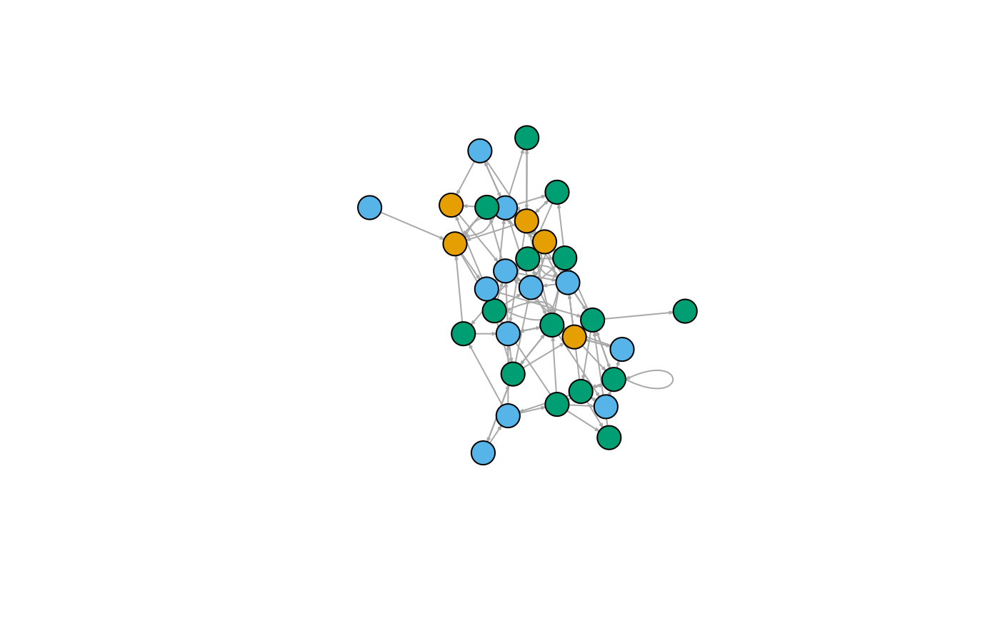

This example edge list was constructed from the mtcars dataset using the example code below. The original data was extracted from the 1974 Motor Trend US magazine, and comprises fuel consumption and 10 aspects of automobile design and performance for 32 automobiles (1973-74 models).
mtcars_edge_list
A data.table with 100 rows (representing 100 edges) and 4 columns:
The origin node of the edge in the graph. In an undirected graph, the distinction between Origin and Destination is arbitrary.
The destination node of the edge in the graph.
The type of the origin node.
The type of the destination node.
#> #>#> #> #>#> #> #>set.seed(1234) # subset data data(mtcars) mtcars = mtcars %>% as.data.table(keep.rownames = "Car") %>% .[, Gear := factor(gear, levels = 3:5, labels = c("Three", "Four", "Five"))] %>% .[, .(Car, Gear)] %>% setkey(Car) # create edge list mtcars_edge_list = data.table( Origin = sample(mtcars[, Car], 100, T), Destination = sample(mtcars[, Car], 100, T)) %>% .[, OriginType := mtcars[.$Origin, Gear]] %>% .[, DestinationType := mtcars[.$Destination, Gear]] # inspect edge list head(mtcars_edge_list)#> Origin Destination OriginType DestinationType #> 1: Porsche 914-2 Merc 230 Five Four #> 2: Lotus Europa Fiat 128 Five Four #> 3: Merc 450SLC Valiant Three Three #> 4: Merc 280 Duster 360 Four Three #> 5: Datsun 710 Toyota Corolla Four Four #> 6: Honda Civic Volvo 142E Four Four# plot graph mtcars_graph = graph.data.frame(mtcars_edge_list, vertices = mtcars, directed = T) mtcars_col = factor(V(mtcars_graph)$Gear) plot(mtcars_graph, vertex.size = 15, vertex.label = NA, edge.arrow.size = .25, vertex.color = mtcars_col)